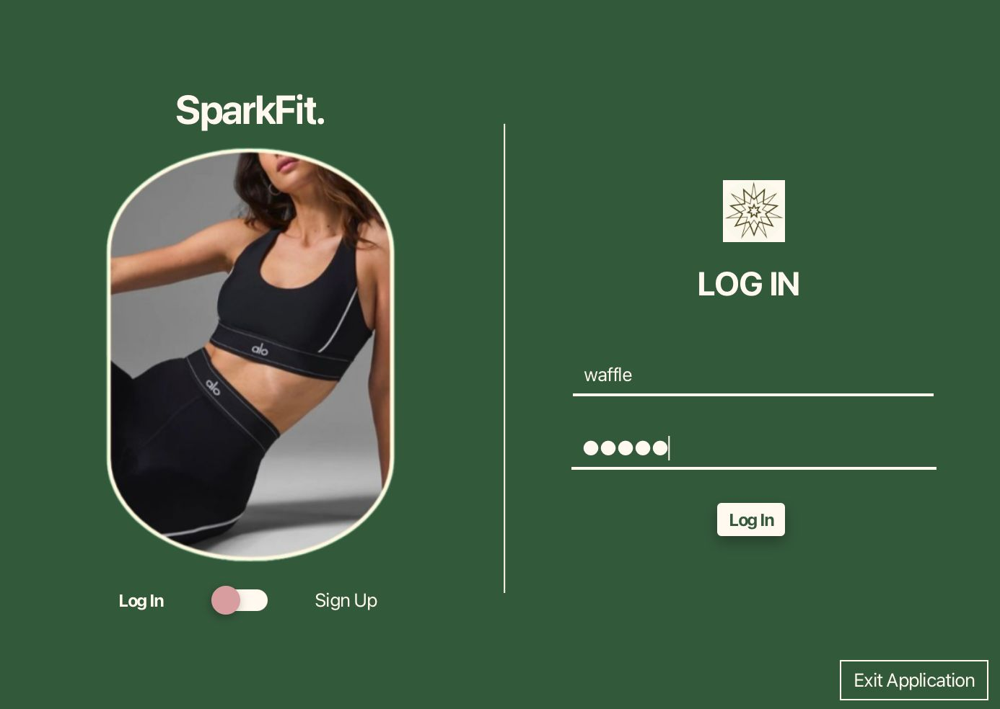

SparkFit supports login, profile setup, goal tracking, workout logs, nutrition logs, and progress charts.
Advanced Programming / JavaFX App
SparkFit Fitness App
A JavaFX desktop application for fitness goal setting, workout logging, nutrition tracking, user profiles, and progress visualisation.
The project shows how I connect interfaces, controllers, user input, and stored fitness data.
The report contains detailed screenshots and implementation notes for each module.
Live Demo
01
SparkFit.
01 / Login Flow
Account access with a simple entry screen.
Users can log in or switch to sign-up before entering the main fitness dashboard.
Login and sign-up navigation
Clean JavaFX onboarding screen
Entry point before dashboard access
App Overview
02Users can create an account, enter profile details, and navigate through the app from a personalised dashboard.
The app supports calorie, step, weight, and sleep goals with deadline and achievement tracking.
Workout and meal logging help users store exercise details, calories, macros, and history.
Progress views use JavaFX charts to summarise calories, steps, sleep, weight, and goal progress.
Technical Highlights
03Architecture
The app is structured with JavaFX scenes, FXML layouts, and controller classes for each major user flow.
JavaFXFXMLControllers
01Data handling
User profiles, goals, workout logs, meal logs, and progress data are stored through local file-based persistence.
File I/OData Models
02UI modules
The app includes dedicated pages for login, sign-up, home, profile, fitness goals, workout logger, nutrition, and progress.
03Report value
The report documents the implemented screens, feature behaviour, storage approach, and future improvements.
04Build Flow
04STEP 01Design
Plan the fitness app modules and main user navigation.
STEP 02Develop
Build JavaFX screens with controllers and scene switching.
STEP 03Store
Save user, goal, workout, meal, and progress data locally.
STEP 04Present
Document the app features and remaining future improvements.
Explore more reportsSwipe sideways
Project reportData Structures and Algorithms
Project reportDatabase System
Project reportWireless Networks and Security
Project reportComputer and Network Security
Project reportComputer Crime and Digital Evidence
Project reportOperating Systems and Computer Networks
Project reportProfessional Practices and Information Security
Project reportSystems Fundamentals
Project reportTheory of Computation